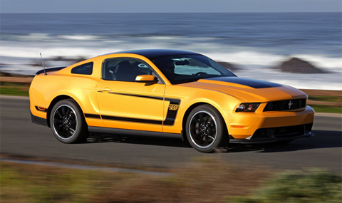

野马T70升级版8月8日上市 新增1.5T发动机 无钥匙进入 10寸智能大屏 语音智能交互系统
19658 次播放
2016-01-01
视频简介：野马T30升级版车型将于8月8日上市，新车在普通版车型的基础上新增了1.5T发动机，并且针对外观、配置进行了升级。野马T30升级版在外观配置上，新车新增了360°全景影像、前泊车雷达、电子助力转向系统、无钥匙进入、一键启动、10英寸智能娱乐系统等装备。